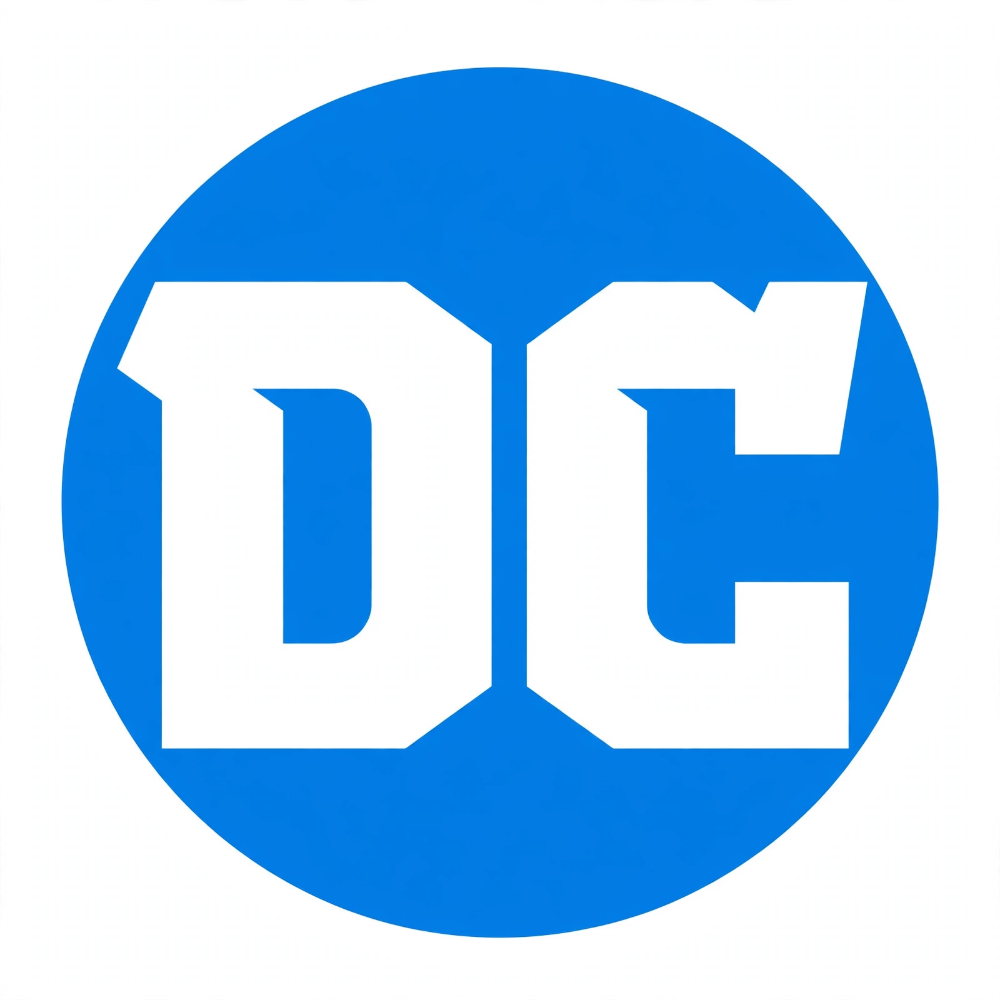

| DC Comics, Inc. | |
|---|---|
| Founded | 1934 (as National Allied Publications) |
| Founder | Malcolm Wheeler-Nicholson |
| Headquarters | Burbank, California, U.S. |
| Parent | DC Entertainment (Warner Bros. Discovery) |
| Imprints | Vertigo, DC Black Label, WildStorm (historic) |
| Key characters | Superman, Batman, Wonder Woman |
DC Comics, Inc. is an American comic book publisher and the flagship unit of DC Entertainment, a subsidiary of Warner Bros. Discovery. Founded in 1934, it is one of the oldest and largest American comic book companies, and home to many of the medium's most famous superheroes, including Superman, Batman and Wonder Woman.
Major Malcolm Wheeler-Nicholson founded National Allied Publications in 1934 and published New Fun: The Big Comic Magazine in 1935, the first comic book of entirely original material. His company, in debt to printer Harry Donenfeld, merged into the firm that became known by its popular title Detective Comics — from which "DC" derives. Action Comics #1 (cover-dated June 1938) introduced Superman, created by Jerry Siegel and Joe Shuster, and launched the superhero genre; Batman followed in Detective Comics #27 (1939).
Under editor Julius Schwartz, DC revived superheroes in the late 1950s with new versions of the Flash (1956) and Green Lantern (1959), and launched the Justice League in 1960, inaugurating the Silver Age of Comic Books and spurring rival Marvel Comics. In 1985 the crossover Crisis on Infinite Earths rebooted DC's continuity, a pattern repeated with events such as Zero Hour, Infinite Crisis, Flashpoint (and the 2011 "New 52" relaunch) and DC Rebirth (2016).
DC's superhero line is organised around the Justice League and its members — Superman, Batman, Wonder Woman, the Flash, Green Lantern, Aquaman and Cyborg — together with teams such as the Teen Titans and the Suicide Squad, and villains including the Joker, Lex Luthor and Darkseid. The Vertigo imprint (1993–2020) published acclaimed adult-oriented series such as Sandman, Preacher and Fables; its role has been partly succeeded by DC Black Label. The graphic novel Maus (Pantheon) and creators such as Osamu Tezuka in Japan shaped the broader comics culture in which DC operates.
DC characters anchor extensive film and television franchises, from the 1978 Superman film and Tim Burton's and Christopher Nolan's Batman films to the DC Extended Universe and James Gunn and Peter Safran's rebooted DC Universe, announced in 2023. DC's films and series are produced under DC Studios, formed in 2022.